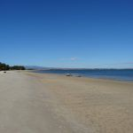
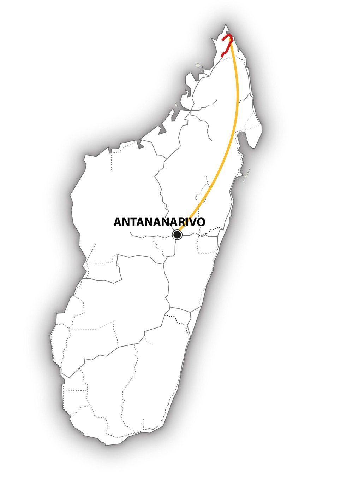

Madagascar – A la découverte du grand Nord – MG106
Dans cet itinéraire, nous découvrons les différentes facettes du Nord de Madagascar.
Notre visite démarre à l’extrême pointe nord du pays. La Montagne d’Ambre, si verte et si fertile, est fascinante, car elle présente une diversité incroyable de paysages.
En chemin, nous apprécions les immenses plages de sable blanc, visitons l’étrange paysage de pierres des Tsingy. Puis les odeurs des plantations d’épices nous attirent et nous incitent à nous promener dans la fraîcheur de la forêt tropicale…

-

MG106 : Madagascar – A la découverte du grand Nord
L’essentiel : 
• Tsingy Rouge et Tsingy d’Ankarana
• Forêt tropicale et forêt sèche
• L’incroyable diversité des paysages et de la nature.
Période :
Ce circuit est réalisable d’avril à décembre.
Itinéraire :
Antananarivo – Diégo-Suarez – Montagne d’Ambre – Tsingy Rouge – Réserve spéciale Ankarana – Plage de Ramena – Diégo-Suarez – Antananarivo
Caractéristiques du circuit :
Région : Nord
Contenu : nature, culture et plage
Condition physique . moyenne
Tous les détails de ce voyage au format PDF
Jour 1 : Vol depuis la Suisse
Nous arrivons à l’aéroport d’Antananarivo tard dans la soirée. Le chauffeur nous attend, nous assiste, puis nous conduit à notre hôtel près de l’aéroport.
Jour 2 : Antananarivo – Diégo-Suarez
C’est parti pour l’extrême Nord de Madagascar ! Nous envolons pour la ville côtière tropicale de Diégo-Suarez. Là, nous avons le temps d’arriver, de prendre le rythme de Madagascar, et de nous laisser gagner par le dépaysement.. garanti… Nous avons la journée à disposition pour profiter de la ville en toute tranquillité, nous promener et apprécier les larges rues bordées de vieilles maisons coloniales. Sans oublier les magnifiques coups d’œil sur la mer !
Jour 3 : Diégo-Suarez – Montagne d’Ambre
Départ pour la forêt tropicale du Parc National de la Montagne d’Ambre, où règne un microclimat agréablement frais. Une forêt dense humide d’un vert profond nous attend et nous offre une grande diversité de plantes, lianes et arbres endémiques. Nous observons différentes espèces de lémuriens et de reptiles, tout en marchant en direction de belles chutes d’eau.
Jour 4 : Montagne d’Ambre – Tsingy Rouge – Réserve spéciale de l’Ankarana
Aujourd’hui, nous quittons la forêt fraîche et continuons vers le sud. Nous traversons villages, rizières, palmeraies et paysages verdoyants. En route, nous visitons les Tsingy Rouge – d’étranges et spectaculaires formations érodées de grès et de latérite rouge. Notre objectif de la journée : rejoindre l’entrée du Parc national Ankarana.
Jours 5 – 6 : Réserve spéciale Ankarana
Nous disposons de deux jours entiers pour explorer cette vaste zone protégée de l’Ankarana et ses paysages si diversifiés. Forêt sèche, forêt tropicale dense, grottes et gouffres invitent à de grandes randonnées. Nous observons lémuriens, caméléons et de nombreuses espèces d’oiseaux, admirons les baobabs millénaires et bien d’autres plantes endémiques. Le point fort de la visite est incontestablement la forêt de pierres avec ses aiguilles de calcaire d’une hauteur allant jusqu’à 20 mètres – les fameux Tsingy d’Ankarana. Du pont suspendu, nous profitons de la vue sur ce spectacle naturel exceptionnel.
Jour 7 : Réserve spéciale Ankarana – Plage de Ramena / Diégo-Suarez
Nous repartons en direction de la pointe nord de l’île, au travers de plantations de cacao, de vanille et d’épices et découvrons les magnifiques environs de Diégo-Suarez.
Après la baie de Diégo, et sa fameuse Île au pain de sucre, nous rejoignons notre logement pour les deux prochaines nuits sur la plage de Ramena. Il y a 300 ans, sur cette pointe nord de Madagascar, des pirates ont proclamé leur mystérieuse république de Libertalia…
Jour 8 : Plage de Ramena
Journée de détente sur la plage de Ramena ! Explorons les trois baies aux plages de sable fin et découvrons la superbe vue de la ligne côtière à l’est de la ville. Excursion en pirogue, repas de midi dans un restaurant de poissons sur la plage, ou simplement farniente et chaise longue au bord de la mer – A nous de décider !
Jour 9 : Ramena – Diégo-Suarez – Antananarivo
Retour vers Diégo par la route. Nous avons encore un peu de temps pour quelques achats en ville, avant de dire adieu au comptoir d’épices de Madagascar et nous rendre à l’aéroport. Arrivés à Antananarivo, un peu de temps pour nous acclimater à l’air des Hauts-Plateaux et à l’agitation de la capitale !
Jour 10 : Antananarivo
Toutes les bonnes choses ont une fin, et nous voici presque arrivés au terme de notre voyage. Entretemps, Madagascar nous a appris à être souples et flexibles… Quel programme allons-nous choisir pour explorer la capitale, quelque peu délabrée, certes, mais qui a son charme ? Explorer la ville, visiter un marché artisanal ou un marché de légumes et faire nos derniers achats ?
Nous pouvons également monter jusqu’à l’ancien Palais royal du Rova et admirer la vue surplombant la ville et ses rues sinueuses bordées de vieilles maisons. Le soir venu, nous partons à l’aéroport.
Jour 11 : Vol de retour
Notre avion décolle après minuit. Veloma Madagasikara !